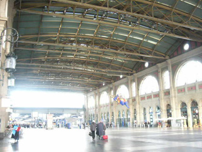
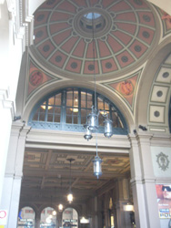
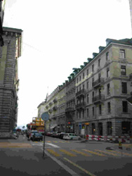
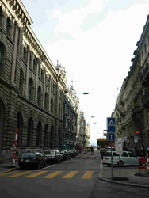
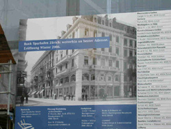
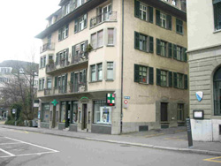
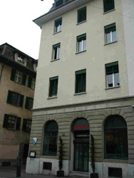
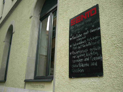

それでは、あなたもツァラに成りきって下さい。まずはチューリヒ駅です。青年ツァラははるばるブカレストから、ここに降り立ちます。手には鞄、ああ長旅はかったるかったな…ここがチューリヒだ！さあスイスにやってきたぞー
 
チューリヒ駅の構内。右は駅の丸天井。スイスの中でも特に美しい街（高い街）とされている、さすがチューリヒです。
調書によると、まず最初に腰を落ち着けたのは、Fraumunsterstrasse 21にあるペンション、Altinger。
Fraumunsterstrasseは、チューリヒを二分する川の左岸に位置する、高級そうな地区の大通りです。
  こんな通り。21番地は↓
 がーん。工事中でした。
いまは銀行らしくて、それの改修をしていました。これは在りし日の建物の写真。でも、ツァラがいたペンションだった頃は、もっと違ったかもしれません。最初の一年、ツァラはここに住みました。
次は、Zurichbergstrasse 19のペンション、Furrerに行きます。
チューリヒの街並みはとてもこざっぱりとしていて、空は広く、アルプスは見えるし、川は流れ、湖にはカモメ…と、とてもすてきなところです。
 これがZurichbergstrasse。
19番地はこちら。
 
閑散……。
ホテルのようです。メニューがありました。

ここはチューリヒ大学からとても近いところです。10分もかかりません。学生らしいな～、私らと同じだな～と、ちょっと親近感を持って嬉しくなりました。チューリヒ大学は、次のページにて！
|